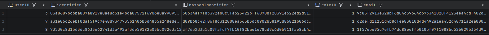

L'objectif de ce projet était de créer un progiciel de gestion intégré (ERP) permettant aux professeurs de l'IUT de gérer et de remplir leurs fiches ressources directement en ligne. Des données personnelles étant récoltées, il était primordial d'en garantir l'intégrité et la stricte confidentialité.
Mon rôle s'est concentré sur la couche de persistance et de sécurité :
La gestion de l'authentification a nécessité une réflexion particulière sur la manipulation des données sensibles :
Difficulté : Il fallait pouvoir assurer la connexion d'un utilisateur (vérification de ses credentials) alors que son identifiant en base de données était lui-même chiffré avec l'ajout d'un sel (salt) aléatoire.
Solution : Au lieu de tenter de déchiffrer l'identifiant pour le comparer, la solution implémentée a été d'enregistrer le hash de l'identifiant (et son sel). Lors de la connexion, le système recalcule le hash de l'identifiant fourni par l'utilisateur et le compare directement au hash stocké en base, garantissant ainsi qu'aucune donnée en clair ne transite ou n'est testée.